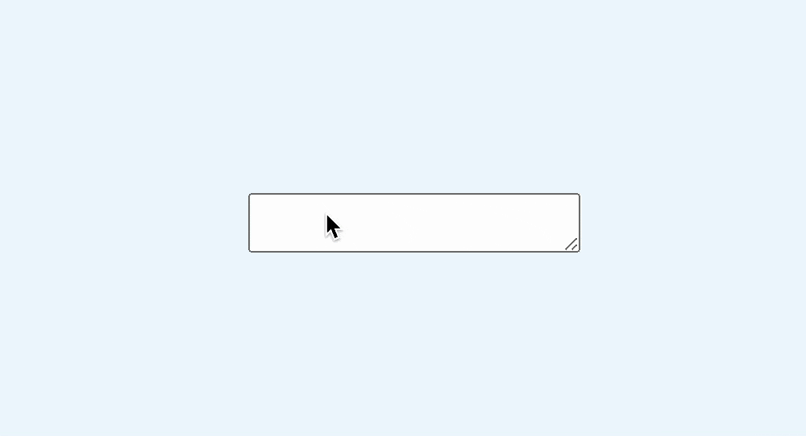
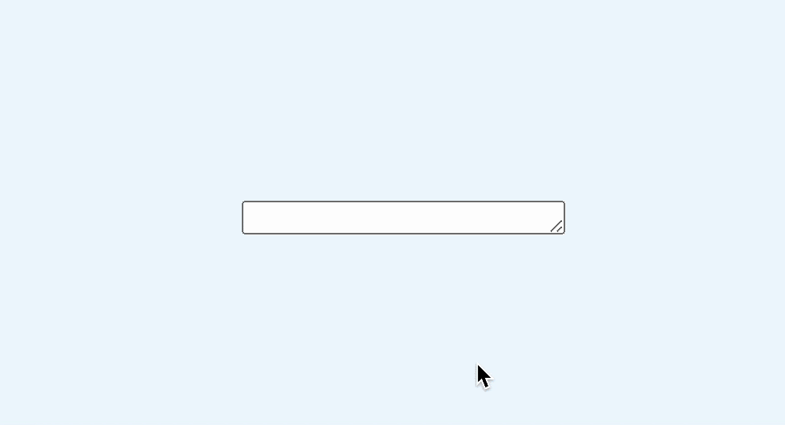
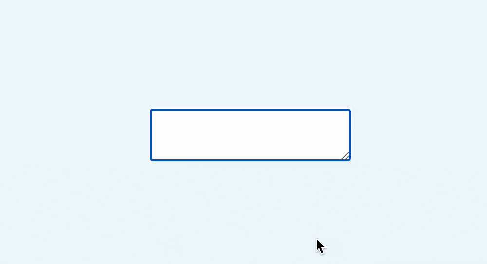
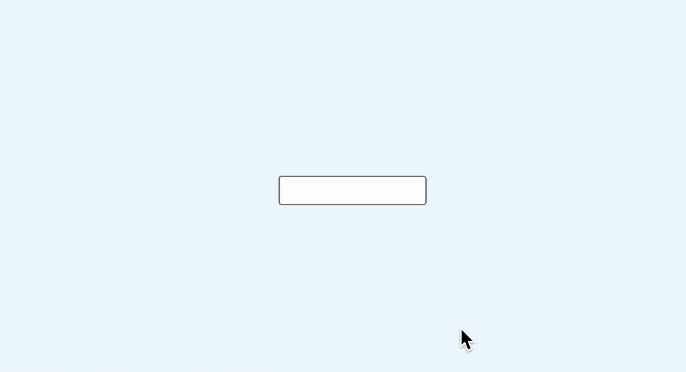
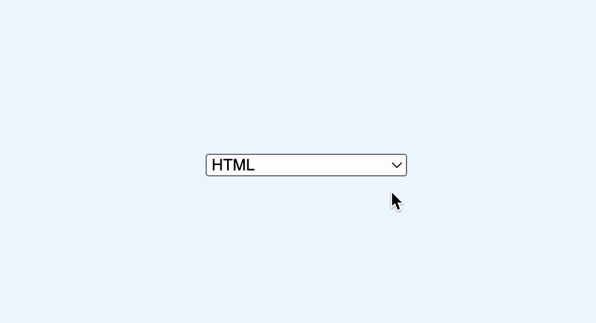
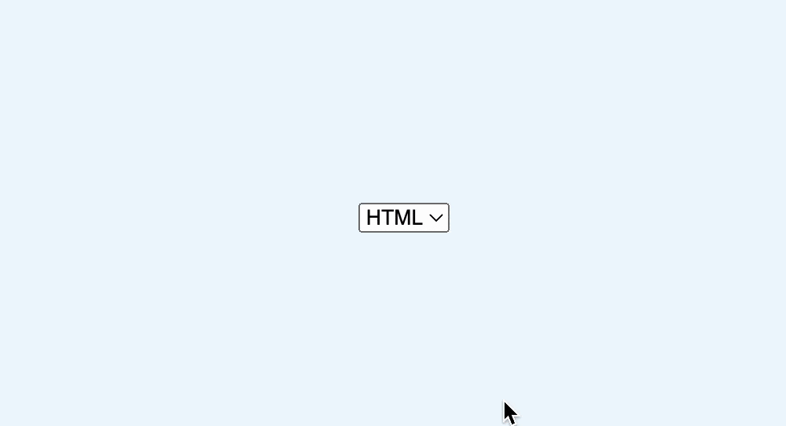

最近 Chrome 123 又推出了一个新的 CSS 属性：field-sizing。有了它，可以轻松实现输入框尺寸自动跟随输入内容的效果
field-sizing 表示“场地”尺寸，在这里指的是表单输入框的尺寸，语法很简单，可以取两个值，如下
field-sizing: fixed | content
其中，fixed 表示固定大小，也就是目前浏览器的默认行为，输入框必须要给定一个具体的尺寸
而 content 表示输入框的尺寸完全由输入内容决定。
举个例子，下面是一个文本域
<textarea></textarea>
默认表现是这样的

可以看到，按回车时，出现了滚动条，这个大家应该再熟悉不过了
这时，如果添加以下属性
textarea {
field-sizing: content;
}
结果...变成了这样
因为这时没有内容，所以也就没有了尺寸，所以一般还需要手动加个尺寸
textarea{
field-sizing: content;
width： 200px;
}
现在宽度固定了，高度仍然有内容决定

这样就实现了一个回车自动增加高度的输入框了，是不是很方便？
还可以设置最小尺寸，这样就更符实际规需求了
textarea{
field-sizing: content;
width： 200px;
min-height: 40px;
}
效果如下

除了前面的文本域 textarea，input 也比较实用，比如要实现一个宽度自适应内容的输入框
input {
min-width: 100px;
field-sizing: content;
}
效果如下

另外，select 元素也是支持的
<select>
<option>HTML</option>
<option>CSS</option>
<option>JavaScript</option>
<option>这是一个很长很长的选项</option>
</select>
默认情况下，select 元素的宽度是由最长的那一项决定的

这样在比较短的选项在选中时就比较突兀，现在我们设置自适应内容尺寸
select {
field-sizing: content;
}
比上面要好很多了

在以往，我们通常是通过给 div 设置可编辑属性，来实现内容自适应
<div contenteditable="true"></div>
虽然也能实现，但是有很多表单特性就丢失了:
onchange 事件缺失，由于只是普通的 div，所以无法监听 change 事件
value 属性缺失，也就是无法通过 div.value 读取或者设置输入内容
minLength、maxLength 属性缺失，无法直接设置最大最小长度
表单提交信息缺失，无法通过默认的 new Form(表单)来获取表单内容
在 vue、react 这些框架中也无法直接双向绑定等等